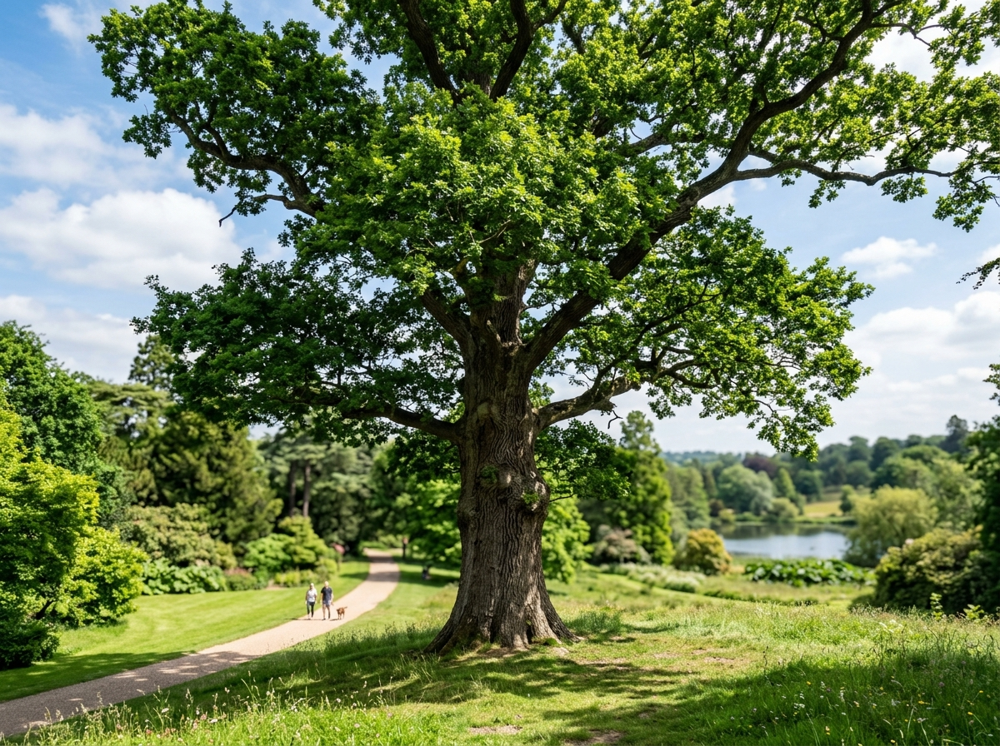
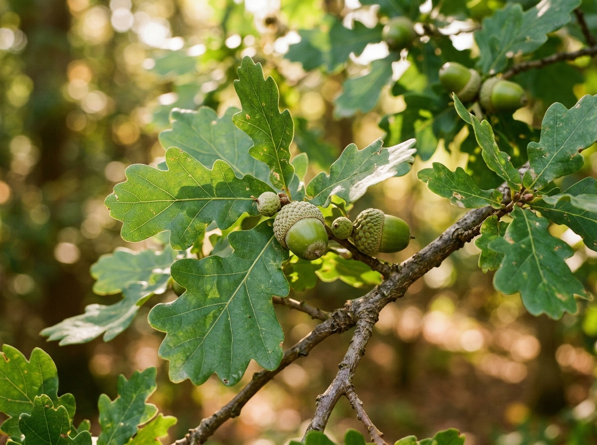

Дуб звичайний, або черешчатий (Quercus robur) - багаторічна рослина родини букових, що є однією з найважливіших лісоутворюючих порід у помірній зоні Європи. Це величне листяне дерево може досягати висоти 30-40 метрів, має міцний стовбур із товстою глибокотріщинуватою корою та розлогу, мальовничу крону, яка надає йому особливої величі.

Тривалість життя дуба становить від кількох сотень до понад тисячі років, що робить його символом сили, довголіття та витривалості у багатьох культурах світу. Деревина дуба славиться надзвичайною міцністю, стійкістю до гниття та естетичною текстурою, через що з давніх часів використовується у суднобудуванні, будівництві та виготовленні якісних меблів.
Жолуді дуба служать цінним кормом для багатьох диких звірів та птахів, зокрема диких кабанів, вивірок, сойок і дятлів. Окрім того, дубові гаї відіграють неоціненну водоохоронну, ґрунтозахисну та кліматорегулюючу роль у природних екосистемах України та всієї Європи.